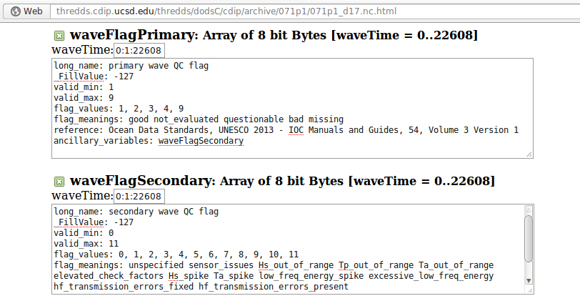

Manual for Real-Time Oceanographic Data Quality Control Flags
https://doi.org/10.25923/w8y6-d298
Acknowledgements
Thanks to all who assisted in the preparation of this document by providing content and reviewing drafts. Special thanks to the Data Management and Communications (DMAC) community members, especially Emilio Mayorga (NANOOS/University of Washington) for his significant support and contribution to the version 1.1 manual update, as well as his thoughtful insights about flag implementation. We are also grateful to Scripps Institution of Oceanography’s Coastal Data Information Program team for providing their data flagging example. We thank Luke Campbell (RPS Group) for sharing the CDL code as an example of data flag implementation in version 1.1 of this manual (removed in this updated version), and Doug Wilson and others at the NOAA Chesapeake Bay Office for supporting that implementation effort.
We appreciate the careful review of version 1.2 by Darren Wright and Corey Olfe (University of California San Diego), Jessica Austin (Axiom Data Science), C.J. Pellerin (NOAA Chesapeake Bay Office), Mike Crowley and the high frequency radar surface current mapping team (Rutgers University), and Jorge Capella (Caribbean Regional Association for Coastal Ocean Observing/DMAC). We thank Felimon Gayanilo (Texas A&M University) and Micah Wengren (U.S. IOOS) for their suggestions. We acknowledge the favorable comments from Teresa Updyke (Old Dominion University) and Jorge Capella (University of Puerto Rico).
We appreciate the efforts of all involved in arranging a code sprint at the University of Michigan in October 2019, and commend Jessica Austin, Jesse Lopez (Axiom Data Science), Andrew Reed, Cris Seaton (Woods Hole Oceanographic Institution), and Joe Smith (Cooperative Institute for Great Lakes Research – University of Michigan) for their participation in the QARTOD Library Implementation session, which consolidated multiple, distributed QARTOD GitHub libraries into a single IOOS organization Python repository.
Appendix A contains the names and affiliations of all those who contributed to the original document and reviewed updated versions of this data QC flag manual.
Acronyms and Abbreviations
| AOOS | Alaska Ocean Observing System |
| CARICOOS | Caribbean Regional Association for Coastal Ocean Observing |
| CDIP | Coastal Data Information Program |
| CDL | Common Data Language |
| CeNCOOS | Central and Northern California Ocean Observing System |
| CF | netCDF Climate and Forecast (CF) Metadata Conventions |
| CO-OPS | Center for Operational Oceanographic Products and Services |
| DCP | Data Collection Platform |
| DMAC | Data Management and Communications |
| ERDDAP | Environmental Research Division Data Access Program |
| GCOOS | Gulf of Mexico Coastal Ocean Observing System |
| GLOS | Great Lakes Observing System |
| GOOS | Global Ocean Observing System |
| IOC | Intergovernmental Oceanographic Commission |
| IOOS | Integrated Ocean ObservingSystem |
| MARACOOS | Mid-Atlantic Regional Association Coastal Ocean Observing System |
| MBARI | Monterey Bay Aquarium Research Institute |
| NANOOS | Northwest Association of Networked Ocean Observing Systems |
| NCDDC | National Coastal Data Development Center |
| NDBC | National Data Buoy Center |
| NERACOOS | Northeastern Regional Association of Coastal Ocean Observing Systems |
| netCDF | Network Common Data Form |
| NOAA | National Oceanic and Atmospheric Administration |
| NODC | National Oceanographic Data Center |
| NOS | National Ocean Service |
| PacIOOS | Pacific Islands Ocean Observing System |
| QARTOD | Quality-Assurance/Quality Control of Real-Time Oceanographic Data |
| QA | Quality Assurance |
| QC | QualityControl |
| RCOOS | Regional Coastal Ocean ObservingSystem |
| SCCOOS | Southern California Coastal Ocean Observing System |
| SECOORA | Southeast Coastal Ocean Observing Regional Association |
| SIO | Scripps Institution of Oceanography |
| UNESCO | United Nations Environmental, Scientific, and Cultural Organization |
| USACE | U.S. Army Corps of Engineers |
| WHOI | Woods Hole Oceanographic Institution |
Document Purpose
The U.S. Integrated Ocean Observing System (IOOS®) has issued Quality Assurance/Quality Control of Real-Time Oceanographic Data (QARTOD) manuals to be used for identifying the quality of oceanographic data in real-time. This data QC flag manual provides information to operators of ocean observing systems about the purpose and protocols of marking or flagging data, so that subsequent use of the data can be properly controlled by both users and automated processes.
Please reference this document as:
U.S. Integrated Ocean Observing System, 2020. Manual for the Use of Real-Time Oceanographic Data Quality Control Flags, Version 1.2. 24 pp. https://doi.org/10.25923/w8y6-d298
Terms and Definitions
This manual contains several terms whose meanings are critical to those using the manual. These terms are included in the following table to ensure that the meanings are clearly defined.
| Data Quality Flag | Data quality flag is metadata associated with a specific data point indicating the results of one or more QC tests. |
| Data Record | A data record is one or more messages that form a coherent, logical, and complete observation. |
| Data User | A data user is a middle or endpoint entity desiring information, but not necessarily knowledgeable in methods used to obtain the information. |
| Interoperable | Interoperable means the ability of two or more systems to exchange and mutually use data, metadata, information, or system parameters using established protocols or standards. |
| Operator | Operators are individuals or entities who are responsible for collecting and providing data. |
| Quality Assurance | QA involves processes that are employed with hardware to support the generation of high quality data. |
| Quality Control | QC involves follow-on steps that support the delivery of high quality data and requires both automation and human intervention. |
| Real-Time | Real-time means that: data are delivered without delay for immediate use; time series extends only backwards in time, where the next data points are not available; and sample intervals may range from a few seconds to a few hours or even days, depending upon the sensor configuration. |
| Primary Flag | A primary flag is a single flag set to the worst case of all QC flags within the data record. |
| Secondary Flag | A secondary flag records the results of a single QC test. |
Background
Need for Flags
Real-time oceanographic data are employed for a wide variety of applications and users. Some applications/users may require that only data of the highest quality be used, and others may seek an indication that a data point is questionable. Some users may prefer the delivery of all data, to be quality controlled using their own criteria. Successful use of the data will depend upon the knowledge, skills, and diligence of the user. Erroneous use of bad data or questionable/good data identified as bad can have serious consequences. For example, specific data points collected during a sudden increase in wind speed resulting from a localized summer thunderstorm may be outside expected wind speeds. However, the automated deletion of such data results in a loss of vital information concerning the weather event.
Operators of observing systems may be best suited to determine the quality of their observations and to document their findings by generating metadata to accompany the observations. Information generated by software in real-time about the data quality is referred to as data quality flags, which become an embedded part of the output data stream. As such, the first value added by generating data quality flags is that the quality of the data has been considered at all—sometimes data flow without any evaluation of their quality.
Multiple Standards
The Intergovernmental Oceanographic Commission/United Nations Environmental, Scientific, and Cultural Organization (IOC/UNESCO) issued a document (hereafter referred to as IOC 54:V3) (UNESCO 2013) with seven examples of flag schemes. Other flag scheme examples exist, including those from the European Global Ocean Observing Systems DATA-MEQ Working Group (Pouliquen et al. 2011) and the National Oceanic and Atmospheric Administration (NOAA) National Ocean Service (NOS) Center for Operational Oceanographic Products and Services (CO-OPS) (Evans et al. 2003). Some flag schemes may simply assign a good or bad rating, which is sufficient for operators/users who desire only good data. At the other extreme, flag schemes can generate a detailed indication of why a data point has been flagged, which is helpful to those responsible for troubleshooting and repairing a sensor.
Acceptance of Standards and Need for Flag Translators
The U.S. IOOS QARTOD Project must accommodate a wide variety of operator QC capabilities. Most operators do not collect sufficient data to justify accepting only the best data and discarding lower quality data—all data can have value to some users. Some operators have highly evolved QC processes in place, and they are not inclined to replace those processes. Other operators may set a few rudimentary min/max thresholds to eliminate outlier data, which, without a flagging scheme, could be interpreted as a data gap. Operators may also have limited resources to implement additional processes/flags.
Diversity in flag schemes is no different than that found worldwide in language, currency, engineering units, etc. One overarching standard may evolve over time, but meanwhile, a near-term solution is to create metadata translation tables to convert one standard to another. Both IOC 54:V3 and Schlitzer (2013) provide good examples of such translations.
QARTOD Data Flag Protocol
Identification and Selection of an Existing Standard
IOC 54:V3 was issued in 2013, shortly after the first QARTOD QC manual was published. A review of the various existing flag standards indicated that the standard suggested in early QARTOD manuals nearly matched the “Primary Level” scheme presented in IOC 54:V3. Rather than adhere to two nearly identical standards, QARTOD decided to adopt the IOC 54:V3 scheme and modify one existing QARTOD manual (dissolved oxygen, accomplished in April 2015) to conform to IOC 54:V3.
Definition of the Accepted Standard
The IOC 54:V3 Primary Level flagging standard (UNESCO 2013) is shown in Table 1.
| Value | Primary-Level Flag Short Name | Definition |
|---|---|---|
| 1 | Good | Passed documented required QC tests |
| 2 | Not evaluated, not available or unknown | Used for data when no QC test performed or the information on quality is not available |
| 3 | Questionable/suspect | Failed non-critical documented metric or subjective test(s) |
| 4 | Bad | Failed critical documented QC test(s) or as assigned by the data provider |
| 9 | Missing data | Used as place holder when data are missing |
: Table 1. Primary Level Flagging Standard.
QARTOD discourages use of the Flag 2 Not Evaluated flag, as this violates the very first of the Seven QARTOD Data Management Laws, which is that “every real-time observation distributed to the ocean community must be accompanied by a quality descriptor” (NOAA 2009).
Further, QARTOD slightly expands the definition of the Flag 3 value to be “Suspect or Of High Interest” to emphasize the importance of retaining the human element within the QC process for such values. The full QARTOD flagging definitions table is given in Table 2.
| Flag | Description |
|---|---|
| Pass=1 | Data have passed critical real-time quality control tests and are deemed adequate for use as preliminary data. |
| Not evaluated=2 | Data have not been QC-tested, or the information on quality is not available. |
| Suspect or Of High Interest=3 | Data are considered to be either suspect or of high interest to data providers and users. They are flagged suspect to draw further attention to them by operators. |
| Fail=4 | Data are considered to have failed one or more critical real-time QC checks. If they are disseminated at all, it should be readily apparent that they are not of acceptable quality. |
| Missing data=9 | Data are missing; used as a placeholder. |
: Table 2. QARTOD flagging definitions based on UNESCO (2013).
Advanced Flagging Schemes
In IOC 54:V3, a secondary flag scheme is proposed, but only the primary level is fully described. Likewise, the U.S. IOOS QARTOD Project adopts only the primary level flags but encourages the use of secondary level flags for additional documentation that may be of use to operators and data users. Secondary level flags may be closely related to a specific sensor and consequently more challenging to translate to another standard. Several examples of such flags are taken from IOC 54:V3 and expanded in Table 3.
| Globally impossible value (exceeds low or high thresholds) |
| Monthly climatology standard deviation test (exceeds warningor failure thresholds) |
| Excessive spike check (exceeds warningor failure, low or high thresholds) |
| Excessive offset/bias when compared to a reference data set (exceeds warning or failure, low or high thresholds) |
| Unexpected X/Y ratio (e.g., chemical stoichiometry or property-property X to T, S, density, amongothers) |
| Excessive spatial gradient orpattern check (“bullseyes”) |
| Below detection limit of method |
: Table 3. Example of quality control tests and data processing history (IOC 54:V3).
Primary Flags
Operators may generate primary flags for the convenience of data users. A primary flag is set to the highestlevel (worst case) flag found in the detailed tests outlined in QARTOD data quality manuals, such as U.S. IOOS (2019). For example, if any tests generate a Flag 4 Bad flag, then the primary flag is set to 4 Bad. This provides a simple check that users can invoke when they require only a basic level of QC. QARTOD does not require use of the primary flag, but does strongly recommend it. U.S. IOOS does require the eleven Regional Associations (RAs) to provide a primary flag.
Implementation
Variable-specific QARTOD tests are identified as required, strongly recommended, and suggested. These groupings have been vetted by the variable-specific communities through the extensive QARTOD manual review process, and they inform the broad swath of capabilities that can exist within each community. The required tests are considered to provide the minimum level of QC and should be relatively easy to implement. However, it is recognized that in some instances even a required test may not be applicable. For example, in the QARTOD Manual for Real-Time Quality Control of Water Level Data (U.S. IOOS 2016), the Location Test is required, but many fixed water level gauges don’t provide a location in the data stream; therefore, the Location Test cannot be performed. In cases where the operator has a defensible reason to exclude a required test, the reason should be provided in the metadata associated with the station.
QARTOD does not dictate the methods operators use to implement data QC flags. Individual bits representing the five identified flag values (tables 1 and 2) may be set, making data masking an easy task. More likely, operators will identify a character string that can detect more than the five values found in tables 1 and 2. Operators are encouraged to provide code that can be used to read data and metadata, including these QC flags.
IOOS uses existing community standards to the maximum extent possible (e.g., QARTOD, Climate and Forecast [CF], Attribute Conventions for Data Discovery [ACDD], Environmental Research Division Data Access Program [ERDDAP], etc.). In February 2020, the ERDDAP project team proposal to the CF governance committee to add QARTOD-inspired standard names to CF was accepted (see https://github.com/cf-convention/cf-conventions/issues/216). The full set of CF standard names available to identify QARTOD flag ancillary variables can be found in the CF Standard Name Table v72 at http://cfconventions.org/Data/cf-standard-names/72/build/cf-standard-name-table.html. The search tool can be employed to find quality-related flag variable names. Implementation of these standardized flag names are further described, and an example is provided, in the IOOS Metadata Profile Version 1.2 at https://ioos.github.io/ioos-metadata/ioos-metadata-profile-v1-2.html-quality-controlqartod. Further documentation of IOOS QARTOD and other QC tests, implemented in Python with notebook examples, have been developed by the community and are shared at https://github.com/ioos/ioos_qc and https://ioos.github.io/ioos_qc/.
An advanced character string flagging scheme can be found in a Scripps Institution of Oceanography (SIO) Coastal Data Information Program (CDIP) Thematic Real-Time Environmental Distributed Data Services (THREDDS) server that hosts the CDIP netCDF data sets (http://thredds.cdip.ucsd.edu/thredds/catalog.html). Table 4 shows the two-tier IOC flagging used by CDIP: waveFlagPrimary holds the IOC-recommended primary level values, and waveFlagSecondary holds additional information as assigned by CDIP QC routines, based on both the data type and sensor type (a Datawell directional Waverider).
The formatting and use of flags and other metadata, either through automated interoperability methods or human use, continue to evolve. Further information and training on metadata standards and other topics can be found on page 8 in the Useful Links section of this manual.

Application of Flags
QC flags provide necessary information to those who may use the data to make important decisions in realtime. The data and the metadata (including QC flag settings) provided in real-time should be archived exactly as they were delivered to users. Therefore, data records containing QC flags set in real-time should retain those flags permanently. Operators should have a high degree of confidence in the assigned QC flags. Postprocessed records may yield a different finding, but these records should not overwrite the real-time records.
However, there are limited instances where it is acceptable to change a real-time flag. In some cases, QC tests operate on a data point that may be one or more cycles old. For example, a spike check might use data points at N₋₂ and N₀ to examine data point N₋₁. In this case, the flag for the QC test on the data point N₀ should be set to “2 Not evaluated, not available, or unknown". After receipt of the subsequent data point, N₀ becomes N₋₁, the spike test can be applied, and the flag can be changed as necessary. Operators and users must understand that some tests operate over several data points, and the determination of primary flags must also take this into consideration. The situation highlights the importance of users (both machine-to-machine and end users) evaluating the QC flags for several time-steps backward.
Summary
There are a wide variety of applications for and users of real-time oceanographic data. The quality of those data is dependent upon many factors, including the ability to apply QC flags to real-time data streams. This QC flag manual has been compiled considering multiple QC flagging schemes that have been documented by various sources. The flagging standard suggested in early QARTOD manuals nearly matched the “Primary Level” scheme presented in IOC 54:V3. Therefore, QARTOD has accepted the IOC 54:V3 scheme as its data QC flag protocol.
Although content for this manual is drawn from many sources, it is primarily intended to support the existing QARTOD QC manuals—not to address all data flagging schemes. Guidance provided in this manual, like that in other QARTOD manuals, also considers that operators have different skill levels and resources with which to apply QC flags. Some operators already employ advanced flagging schemes, while others use basic thresholds to flag outlier data.
U.S. IOOS DMAC operators implementing QARTOD QC tests maintain a code repository at https://github.com/ioos/ioos_qc and https://ioos.github.io/ioos_qc/, where others may find or post examples of code in use. Such leveraging of developed code is strongly encouraged and appreciated.
Each QC manual is envisioned as a dynamic document and will be posted on the QARTOD website at https://ioos.noaa.gov/project/qartod/. This process allows for QC manual updates as technology development occurs for both upgrades of existing sensors and new sensors.
References
Evans, M., French, G., and Bethem, T., 2003. Information Systems Branch PORTS Uniform Flat File Format (PUFFF) NOAA/NOS/CO-OPS, Silver Spring, Maryland. 32 pp. http://tidesandcurrents.noaa.gov/publications/pufff4.pdf
NOAA, 2009. Fifth Workshop on the QA/QC of Real-Time Oceanographic Data. November 16-19, 2009. 136 pp. Omni Hotel, Atlanta, Georgia. https://cdn.ioos.noaa.gov/media/2019/05/QARTODVReport_Final2.pdf
Paris. Intergovernmental Oceanographic Commission of UNESCO, 2013. Ocean Data Standards, Vol.3: Recommendation for a Quality Flag Scheme for the Exchange of Oceanographic and Marine Meteorological Data. (IOC Manuals and Guides, 54, Vol. 3.) 12 pp. (English.)(IOC/2013/MG/54-3) http://www.nodc.noaa.gov/oceanacidification/support/MG54_3.pdf
Pouliquen, S., 2011. Recommendations for in-situ data Real Time Quality Control. 23 pp. http://eurogoos.eu/download/reference_documents_/rtqc.pdf
Schlitzer, R., 2013. Ocean Quality Flag Schemes and Mapping between Them, Version 1.4. Alfred Wegener Institute for Polar and Marine Research, Bremerhaven, Germany. 18 pp. http://odv.awi.de/fileadmin/user_upload/odv/misc/ODV4_QualityFlagSets.pdf
U.S. Integrated Ocean Observing System, 2016. Manual for Real-Time Quality Control of Water Level Data Version 2.0: A Guide to Quality Control and Quality Assurance of Water Level Observations. 46 pp. https://doi.org/10.7289/V5QC01Q7
U.S. Integrated Ocean Observing System, 2019. Manual for Real-Time Quality Control of In-Situ Surface Wave Data Version 2.1: A Guide to Quality Control and Quality Assurance of In-Situ Surface Wave Observations. 70 pp. https://doi.org/10.25923/7yc5-vs69
Useful Links
U.S. IOOS Website https://ioos.noaa.gov/project/qartod/
Ocean Data Standards Pilot Project http://www.oceandatastandards.org/
Hydrographic Data Formats https://cchdo.github.io/hdo-assets/documentation/manuals/pdf/90_1/chap4.pdf
CF Conventions and Metadata http://cfconventions.org/
Data Buoy Cooperation Panel Meta-T Pilot Project https://marinemetadata.org/community/teams/metat/introduction and http://www.jcommops.org/dbcp/data/metadata.html
National Centers for Environmental Information (NCEI) Metadata Training https://www.ncddc.noaa.gov/metadata-standards/metadata-training/course-one/
Introduction to Oceanographic Data Management http://classroom.oceanteacher.org/course/view.php?id=131
Ocean Best Practices System https://obpsystem.org/
Argo Quality Control Manual for CTD and Trajectory Data Version 3.3 https://archimer.ifremer.fr/doc/00228/33951/
Appendix A. QARTOD Data QC Flag Manual Team
QARTOD Data QC Flag Manual Reviewers, Version 1.2
| Name | Organization |
|---|---|
| Jessica Austin | Axiom Data Science |
| Mark Bushnell | U.S. IOOS |
| Jorge Capella | CARICOOS |
| Mike Crowley | Rutgers University |
| Felimon Gayanilo | Texas A&M University |
| Corey Olfe | University of California San Diego |
| Teresa Updyke | Old Dominion University |
| Micah Wengren | U.S. IOOS |
| Darren Wright | Universityof California San Diego |
U.S. IOOS Regional Associations, Version 1.2
| Name | Organization |
|---|---|
| Josie Quintrell | IOOS Association |
| Clarissa Anderson | SCCOOS |
| Jake Kritzer | NERACOOS |
| Debra Hernandez | SECOORA |
| Melissa Iwamoto | PacIOOS |
| Barbara Kirkpatrick | GCOOS |
| Gerhard Kuska | MARACOOS |
| Molly McCammon | AOOS |
| Julio Morell | CARICOOS |
| Jan Newton | NANOOS |
| Kelli Paige | GLOS |
| Henry Ruhl | CeNCOOS |
QARTOD Board of Advisors, Version 1.2
| Name | Organization |
|---|---|
| Kathleen Bailey – Project Manager | U.S. IOOS |
| Julie Bosch | NOAA/National Centers for Environmental Information |
| Eugene Burger | NOAA/Pacific Marine Environmental Laboratory |
| Jennifer Dorton | SECOORA |
| Regina Easley | National Institute of Standards and Technology |
| Robert Heitsenrether | NOS/Center for Operational Oceanographic Products and Services |
| Jeff King | U.S. Army Corps of Engineers |
| Karen Grissom | NOAA/National Data Buoy Center |
| Mario Tamburri | University of Maryland Center for Environmental Science / Chesapeake Biological Laboratory |
| Julianna Thomas – BOA Chair | SCCOOS / Scripps Institution of Oceanography / Coastal Data Information Program (retired) |
| Christoph Waldmann | Universityof Bremen / MARUM |
DMAC Community, Version 1.2
Regional Associations
| Organization | Representative(s) |
|---|---|
| AOOS | Carol Janzen |
| GCOOS | Bob Currier |
| CARICOOS | Miguel Canals, Roy Watlington |
| SECOORA | Jennifer Dorton, Filipe Pires Alvarenga Fernandes, Abbey Wakely |
Research Organizations
| Organization | Representative(s) |
|---|---|
| Gulf of Maine Research Institute | Eric Bridger |
| Scripps Institution of Oceanography | Vicky Rowley |
| Monterey Bay Aquarium Research Institute | Fred Bahr |
| Smithsonian Environmental Research Center | Matthew Ogburn |
Federal and State Agencies
| Organization | Representative(s) |
|---|---|
| Bureau of Ocean Energy Management | Brian Zelenke, Jonathan Blythe |
| Environmental Protection Agency | Dwane Young |
| Great Lakes Commission | Guan Wang |
| U.S. Geological Survey | Abigail Benson, Sky Bristol, James Kreft, Rich Signell |
| National Oceanic and Atmospheric Administration | Tim Boyer, Mark Bushnell, Gabrielle Canonico, Kenneth Casey, Lynn Dewitt, Dave Easter, Benjamin LaCour, Tony Lavoi, Frank Lodato, Jessica Morgan, Kevin O'Brien, Thomas Ryan, Bob Simons, Derrick Snowden, Tiffany Vance, Micah Wengren, Bill Woodward |
Academic Institutions, Version 1.2
| Institution | Representative(s) |
|---|---|
| University of Maine | Bob Fleming |
| University of Maryland | Mario Tamburri |
| Dalhousie University | Lenore Bajona, Brad Covey, Richard Davis |
| University of Puerto Rico | Jorge Capella, Juan Orlando Gonzalez Lopez |
| University of Hawaii | James T. Potemra |
| University of Washington | Emilio Mayorga |
| Texas A & M University | Felimon Gayanilo |
| Rutgers University | John Kerfoot, Michael Vardaro |
| University of Tasmania | Peter Walsh |
Private Industry
| Organization | Representative(s) |
|---|---|
| LimnoTech | Kathy Koch, Tad Slawecki |
| RPS Group | Ben Adams, Robert Fratantonio, Kelly Knee, Brian McKenna |
| Axiom | Jessica Austin, Rob Bochenek, Stacey Buckelew, Shane StClair, Kyle Wilcox |
| Ocean Tracking Network | Jonathan Pye |
| GMRI | Alex Kerney |
QARTOD Data QC Flag Manual Reviewers, Version 1.1
| Name | Organization |
|---|---|
| Mark Bushnell | U.S. IOOS |
| Luke Campbell | RPS Group |
| Emilio Mayorga | NANOOS/University of Washington |
U.S. IOOS Regional Associations, Version 1.1
| Name | Organization |
|---|---|
| Josie Quintrell | IOOS Association |
| Clarissa Anderson | SCCOOS |
| Francisco Chavez | CeNCOOS |
| Debra Hernandez | SECOORA |
| Barbara Kirkpatrick | GCOOS |
| Gerhard Kuska | MARACOOS |
| Molly McCammon | AOOS |
| Julio Morell | CariCOOS |
| Ru Morrison | NERACOOS |
| Jan Newton | NANOOS |
| Melissa Iwamoto | PacIOOS |
| Kelli Paige | GLOS |
QARTOD Board of Advisors, Version 1.1
| Name | Organization |
|---|---|
| Kathleen Bailey – Project Manager | U.S. IOOS |
| Julie Bosch | NOAA/National Centers for Environmental Information |
| Eugene Burger | NOAA/Pacific Marine Environmental Laboratory |
| Janet Fredericks | Woods Hole Oceanographic Institution |
| Matt Howard | GCOOS/Texas A&M University |
| Bob Jensen | U.S. Army Corps of Engineers |
| Chris Paternostro | NOS / CO-OPS |
| Mario Tamburri | University of Maryland Center for Environmental Science / Chesapeake Biological Laboratory |
| Julie Thomas – BOA Chair | SCCOOS / Scripps Institution of Oceanography / Coastal Data Information Program |
DMAC Community, Version 1.1
Regional Associations
| Organization | Representative(s) |
|---|---|
| AOOS | Carol Janzen |
| GCOOS | Bob Currier |
| CARICOOS | Miguel Canals, Roy Watlington |
| SECOORA | Abbey Wakely, Debra Hernandez, Filipe Pires Alvarenga Fernandes |
Research Organizations
| Organization | Representative(s) |
|---|---|
| Gulf of Maine Research Institute | Eric Bridger |
| Scripps Institution of Oceanography | Darren Wright |
| Monterey Bay Aquarium Research Institute | Aric Bickel, Anderson David, Fred Bahr |
| Smithsonian Environmental Research Center | Matthew Ogburn |
Federal and State Agencies
| Organization | Representative(s) |
|---|---|
| Bureau of Ocean Energy Management | Brian Zelenke, Jonathan Blythe |
| Environmental Protection Agency | Dwane Young |
| Great Lakes Commission | Guan Wang |
| National Oceanic and Atmospheric Administration | Becky Baltes, Bill Woodward, Kenneth Casey, Mark VanWaes, Alexander Birger, Bob Simons, Byron Kilbourne, Dave Easter, Derrick Snowden, Eric Johnson, Frank Lodato, Gabrielle Canonico, Jack Harlan, Jason Gedamke, Jeff de La Beaujardiere, Jenifer Rhoades, Jennifer Bosch, Jennifer Patterson, Jessica Morgan, Kevin O'Brien, Lynn Dewitt, Mark Bushnell, Mathew Biddle, Micah Wengren, Rita Adak, Robert Bassett, Samantha Simmons, Thomas Ryan, Tiffany Vance, Tim Boyer, Tony Lavoi, Xiaoyan Li |
| U.S. Army Corps of Engineers | Jeff Lillycrop |
| U.S. Geological Survey | Abigail Benson, James Kreft, Rich Signell, Sky Bristol |
Academic Institutions, Version 1.1
| Institution | Representative(s) |
|---|---|
| University of Maine | Bob Fleming |
| University of Maryland | Mario Tamburri |
| Dalhousie University | Brad Covey, Lenore Bajona, Richard Davis |
| University of Puerto Rico | Jorge Capella, Juan Orlando Gonzalez Lopez, Julio Morell |
| University of Hawaii | Chris Ostrander, James T. Potemra, Melissa Iwamoto |
| University of Washington | Emilio Mayorga |
| Texas A & M University | Felimon Gayanilo |
| Rutgers University | John Kerfoot, Michael Vardaro |
| University of Tasmania | Peter Walsh |
Private Industry
| Organization | Representative(s) |
|---|---|
| LimnoTech | Kathy Koch, Tad Slawecki |
| RPS Group | Kelly Knee, Luke Campbell, Melanie Gearon |
| Axiom | Kyle Wilcox, Rob Bochenek, Shane StClair |
| Animal Tracking Network | Jonathan Pye |
Data QC Flag Manual Editors, Version 1.0
| Name | Organization |
|---|---|
| Mark Bushnell, Lead | CoastalObsTechServices LLC/CO-OPS |
| Ray Toll | Old Dominion University/NDBC |
| Helen Worthington | REMSA/CO-OPS |
Data QC Flag Manual Reviewers/DMAC Committee, Version 1.0
| Name | Organization |
|---|---|
| Rob Bochenek | AOOS/Axiom Consulting & Design |
| Julie Bosch | NOAA/NCDDC |
| Eric Bridger | NERACOOS/GMRI |
| Jorge Capella | CariCOOS/University of Puerto Rico |
| Jeremy Cothran | SECOORA |
| Janet Fredericks | WHOI |
| Lisa Hazard | SCCOOS/Scripps Institute of Oceanography |
| Bob Heitsenrether | NOAA/CO-OPS |
| Matt Howard | GCOOS/Texas A&M University |
| Steven Le | CeNCOOS/SAIC |
| Emilio Mayorga | NANOOS/University of Washington |
| Jennifer Patterson | CeNCOOS/MBARI |
| Jim Potemra | PacIOOS/University of Hawaii |
| Rob Ragsdale | U.S. IOOS |
| Tad Slawecki | GLOS/LimnoTech |
| Derrick Snowden | U.S. IOOS |
| Shane StClair | AOOS/Axiom Consulting & Design |
| Vembu Subramanian | SECOORA |
| Julie Thomas | SIO/CDIP |
| Kyle Wilcox | MARACOOS/Applied Science Associates, Inc. |
QARTOD Board of Advisors, Version 1.0
| Name | Organization |
|---|---|
| Joe Swaykos - Chair | NDBC |
| Derrick Snowden | U.S. IOOS |
| Julie Bosch | NOAA/NCDDC |
| Julie Thomas | SIO/CDIP |
| Derrick Snowden | US IOOS |
| Matt Howard | GCOOS |
| Chris Paternostro | NOAA/CO-OPS |
| Bob Jensen | USACE |
| Janet Fredericks | WHOI |
U.S. IOOS Regional Associations, Version 1.0
| Name | Organization |
|---|---|
| Josie Quintrell – Director | U.S. IOOS Association |
| Leslie Rosenfeld | CeNCOOS |
| Jan Newton | NANOOS |
| Debra Hernandez | SECOORA |
| Julie Thomas | SCCOOS |
| Ann Jochens | GCOOS |
| Gerhard Kuska | MARACOOS |
| Molly McCammon | AOOS |
| Ru Morrison | NERACOOS |
| Jorge Corridor | CariCOOS |
| Heather Kerkering | PacIOOS |
| Jen Read | GLOS |